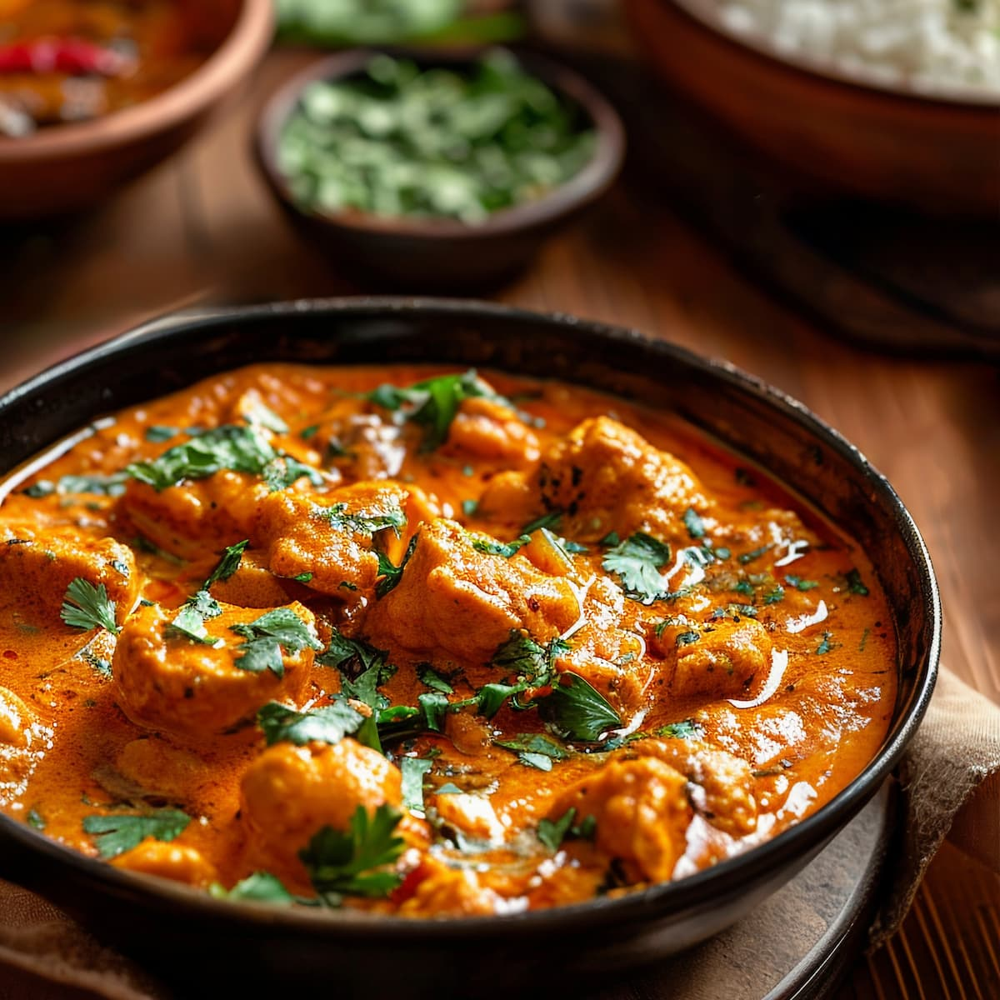

Chicken Tikka Masala
Home

Description
Tender pieces of marinated chicken cooked in a creamy, aromatic tomato-based sauce with traditional Indian spices.
Ingredients
For the Chicken Marinade
- Boneless chicken thighs, cut into pieces — 600 g
- Plain yogurt — 150 g
- Lemon juice — 1 tbsp
- Garlic, minced — 3 cloves
- Ginger, grated — 1 tbsp
- Ground cumin — 1 tsp
- Ground coriander — 1 tsp
- Garam masala — 1 tsp
- Paprika — 1 tsp
- Salt — 1 tsp
For the Sauce
- Vegetable oil — 2 tbsp
- Butter — 2 tbsp
- Onion, finely chopped — 1 large
- Garlic, minced — 3 cloves
- Ginger, grated — 1 tbsp
- Tomato puree — 400 g
- Heavy cream — 150 ml
- Garam masala — 1 tsp
- Ground cumin — ½ tsp
- Ground coriander — ½ tsp
- Chili powder — ½ tsp
- Salt — ½ tsp
- Fresh cilantro, chopped — 2 tbsp
Steps
- Marinate the chicken: Combine yogurt, lemon juice, garlic, ginger, cumin, coriander, garam masala, paprika, and salt in a bowl. Add the chicken and mix well. Cover and refrigerate for at least 30 minutes.
- Cook the chicken: Heat a large skillet over medium-high heat. Cook the marinated chicken pieces in batches until browned and cooked through. Remove and set aside.
- Cook the aromatics: Heat the oil and butter in the same skillet. Add the chopped onion and cook for 5–7 minutes until softened and lightly golden.
- Add garlic and ginger: Stir in the garlic and ginger and cook for about 1 minute.
- Make the sauce: Add the tomato puree, garam masala, cumin, coriander, chili powder, and salt. Simmer for 10–15 minutes, stirring occasionally.
- Add the cream: Reduce the heat and stir in the heavy cream. Simmer gently for 3–4 minutes.
- Combine the chicken: Return the cooked chicken to the skillet and simmer for another 5–7 minutes, allowing the chicken to absorb the flavors.
- Garnish and serve: Sprinkle with fresh cilantro and serve hot with basmati rice or naan.